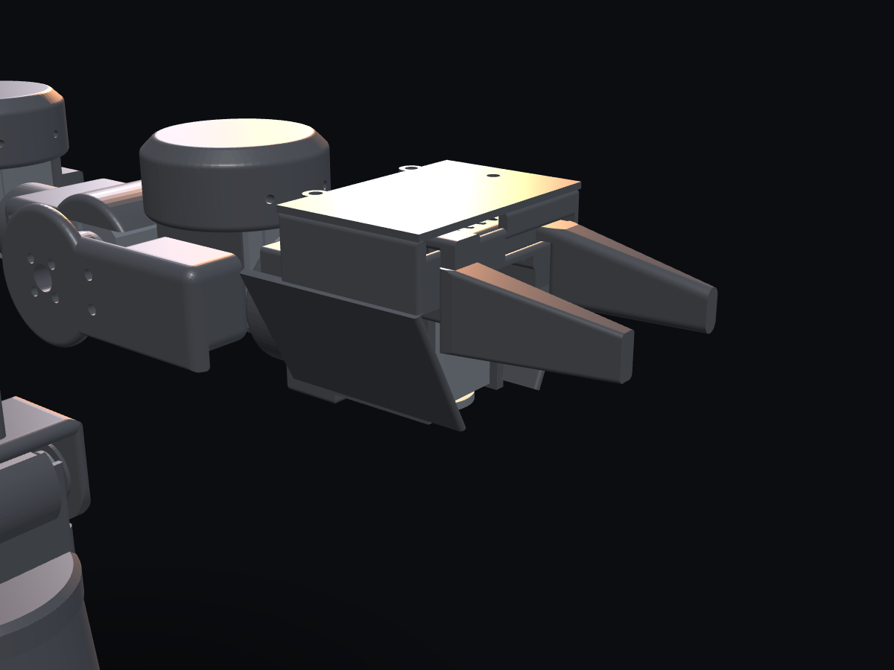
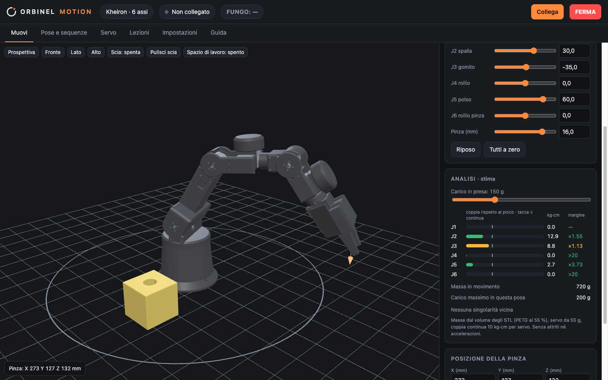

Engineering
Motion.
We design modular robots and the tools to build, simulate and learn them — from the first CAD sketch to a robot on your desk. Progettiamo robot modulari e gli strumenti per costruirli, simularli e impararli: dal primo schizzo CAD al robot sulla tua scrivania.
Robots should be understood, not just bought. Every Orbinel robot is modular, documented down to the last screw, and simulated before it moves — so you can build it, change it and learn from it. I robot vanno capiti, non solo comprati. Ogni robot Orbinel è modulare, documentato fino all'ultima vite e simulato prima di muoversi: così puoi costruirlo, modificarlo e impararci.
Five areas,
one system.Cinque aree,
un solo sistema.
Hardware, parts, manufacturing, software and education share the same models and the same kinematics. What you learn in the simulator is what the real robot does.Hardware, componenti, produzione, software e formazione condividono gli stessi modelli e la stessa cinematica. Quello che impari nel simulatore è quello che fa il robot vero.
Orbinel Build
Robots you build yourself, in three tiers: digital Build Pack, kit, or assembled and tested.Robot da costruire da sé, in tre livelli: Build Pack digitale, kit, oppure montato e testato.
Orbinel Parts
Interchangeable grippers, tools and accessories on a shared interface — plus a parametric generator.Pinze, utensili e accessori intercambiabili su un attacco comune, più un generatore parametrico.
Orbinel Make
On-demand 3D printing of small batches: robot parts, prototypes, technical spares.Stampa 3D su richiesta di piccoli lotti: parti dei robot, prototipi, ricambi tecnici.
Orbinel Motion
The simulator, in your browser: 3D robot, analysis, sequences and lessons. Plug in a real Kheiron and the same app drives it.Il simulatore, nel browser: robot in 3D, analisi, sequenze e lezioni. Colleghi un Kheiron vero e la stessa app lo comanda.
Orbinel Learn
A robotics lab for schools: simulator and lessons first, then the real robot.Un laboratorio di robotica per le scuole: prima simulatore e lezioni, poi il robot vero.
Kheiron.
A 6-axis desktop arm with a spherical wrist, smart serial servos and a parallel gripper. Every structural part is 3D printed; the electronics fit inside the base.Un braccio da scrivania a 6 assi con polso sferico, servo seriali intelligenti e pinza parallela. Ogni parte strutturale è stampata in 3D; l'elettronica sta dentro la base.
- Closed-form kinematicsCinematica in forma chiusa — same architecture as industrial arms.la stessa architettura dei bracci industriali.
- Hardware emergency stopArresto d'emergenza fisico — servos freeze and hold position.i servo si fermano e tengono la posizione.
- Tool interfaceAttacco utensile — swap gripper and tools in seconds.cambi pinza e utensili in pochi secondi.

Simulate first.
Then move.Prima simula.
Poi muovi.
Runs in the browser. Without a robot it is a full simulator; plug in Kheiron over USB and the real arm follows.Funziona nel browser. Senza robot è un simulatore completo; colleghi Kheiron via USB e il braccio vero segue.

Guided setupConfigurazione guidata
Find servos, assign IDs, calibrate zero and gripper step by step.Trova i servo, assegna gli ID, calibra zero e pinza passo per passo.
Joint & Cartesian controlComando giunti e cartesiano
Sliders or X, Y, Z targets with inverse kinematics and collision checks.Cursori o punti X, Y, Z con cinematica inversa e controllo delle collisioni.
Load analysisAnalisi dei carichi
Torque on every joint, safety margins, singularities and workspace — estimated from the real CAD.Coppia su ogni giunto, margini, singolarità e spazio di lavoro, stimati dal CAD reale.
Poses & sequencesPose e sequenze
Teach points, chain them, run with a countdown. Export and share as a file.Salva i punti, mettili in fila, esegui con il conto alla rovescia. Esporta e condividi in un file.
Built in public,
step by step.Sviluppato in pubblico,
un passo alla volta.
No dates we can't keep. This is the order we work in, and where we are now.Nessuna data che non possiamo mantenere. Questo è l'ordine in cui lavoriamo, e dove siamo adesso.
Kheiron CAD and kinematicsCAD e cinematica di Kheiron
Full assembly, joint ranges, torque checks, gripper, electronics bay.Assieme completo, corse dei giunti, verifiche di coppia, pinza, vano elettronica.
Physical prototype + MotionPrototipo fisico + Motion
Printing, assembly, first moves with real servos; simulator and control software.Stampa, montaggio, primi movimenti con i servo veri; simulatore e software di controllo.
Kheiron Build Pack + first PartsBuild Pack di Kheiron + prime Parts
Verified files, illustrated assembly guide, bill of materials, Motion profile.File verificati, guida di montaggio illustrata, distinta componenti, profilo per Motion.
Learn pilot in schoolsPilota Learn nelle scuole
Lessons tested in real classrooms with teachers.Lezioni provate in classi vere con i docenti.
Kits and on-demand printingKit e stampa su richiesta
Printed parts and kits, once the design is validated.Parti stampate e kit, quando il progetto è validato.
Assembled robots and new familiesRobot montati e nuove famiglie
Tested robots, then new modular robots — starting with a mobile base.Robot testati, poi nuovi robot modulari, a partire da una base mobile.
From an orbit,
a system.Da un'orbita,
un sistema.
Orbinel comes from the Latin orbis — circle, disc, world. Rotation is what every joint does, and a system is what joints become together.Orbinel viene dal latino orbis: cerchio, disco, mondo. La rotazione è ciò che fa ogni giunto, e un sistema è ciò che i giunti diventano insieme.
Orbinel Robotics is an early-stage project born in Italy from mechanical design, 3D printing and software. We start with one robot done properly, and we grow from there — new robots, new parts, new fields. Everything we learn, we document.Orbinel Robotics è un progetto nato in Italia da progettazione meccanica, stampa 3D e software. Partiamo da un robot fatto bene e cresciamo da lì: nuovi robot, nuove parti, nuovi settori. Tutto quello che impariamo, lo documentiamo.
Write to usScrivici
Collaborations, schools, press, custom projects.Collaborazioni, scuole, stampa, progetti su misura.
The build, episode by episode.Lo sviluppo, episodio per episodio.
Need a part printed?Ti serve un pezzo stampato?
Send the file and what it has to do.Mandaci il file e a cosa serve.